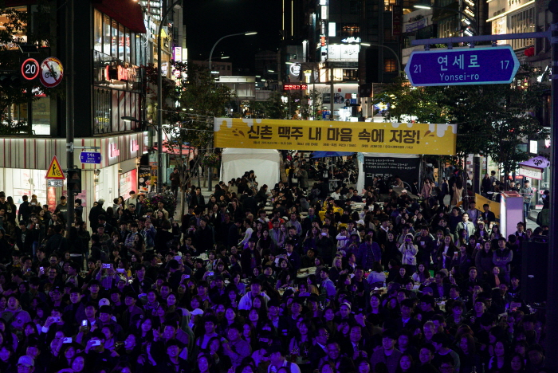
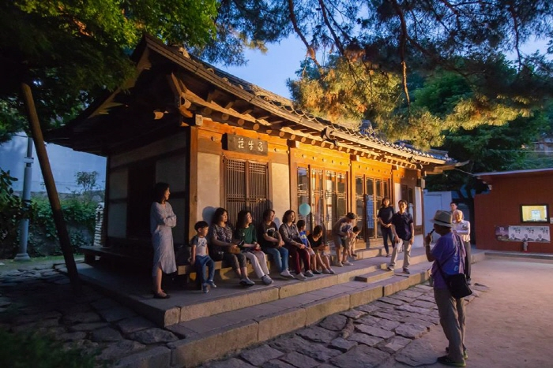
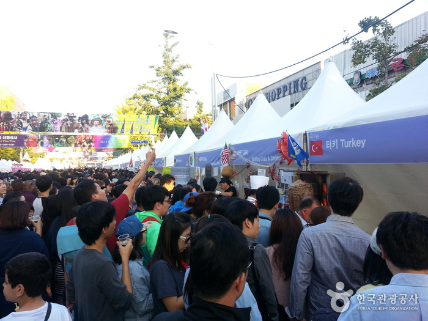

 신촌맥주축제 2018 행사기간 : 2018.09.07 ~ 2018.09.09 위치 : 서울특별시 서대문구 창천동 연세로 행사장소 : 신촌 연세로 연락처 : 02-2165-3056 홈페이지 : https://www.facebook.com/shinchonbeer
 성북동 문화재야행 2018 행사기간 : 2018.09.14 ~ 2018.09.15 위치 : 서울특별시 성북구 성북로 37 (성북동1가) 행사장소 : 성북구 성북로 일대(한신아파트 입구~홍익중고 앞 정류장, 400m 구간) 연락처 : 070-7555-4216 홈페이지 : http://www.sbnightroad.com
 이태원 지구촌축제 2018 행사기간 : 2018.10.13 ~ 2018.10.14 위치 : 서울특별시 용산구 이태원로 (이태원동) 행사장소 : 이태원관광특구 일원 연락처 : 02-2199-7250, 02-797-7319,2293 홈페이지 : http://www.itaewon.or.kr